Versatile applications
Once trained, our model supports versatile applications: blend several references across one surface, carry beyond base colour into full PBR channels, texture a shape it was never trained on, and fill a whole mesh from a single view.
4.1 Blending with two or more references
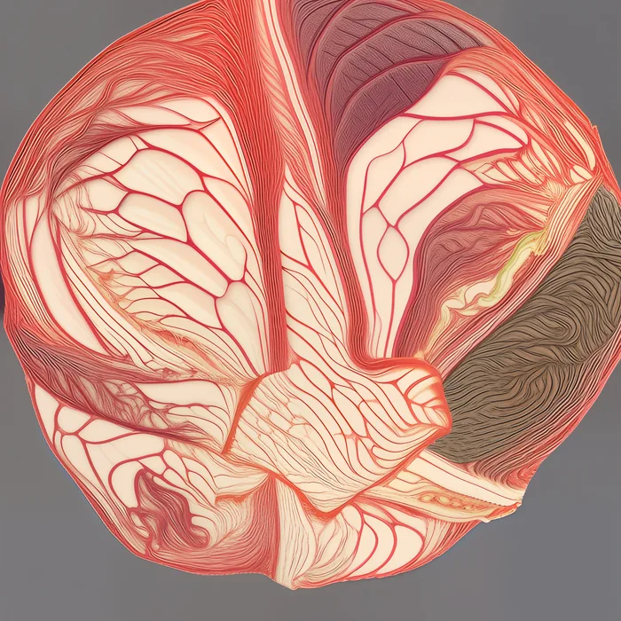

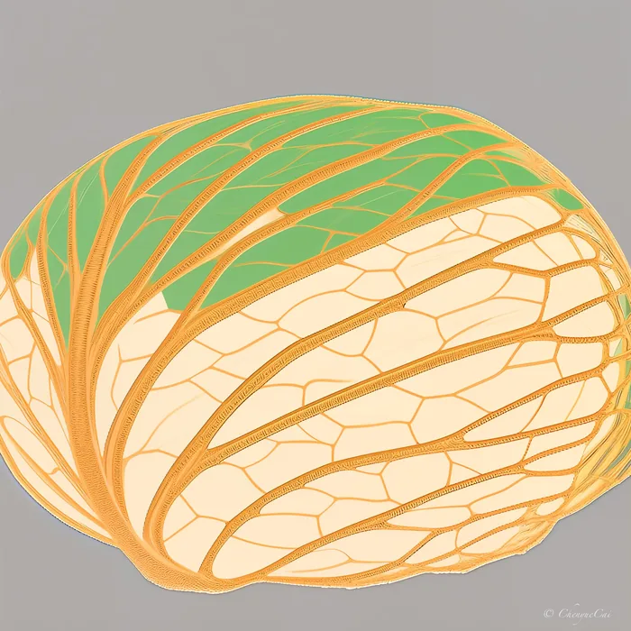
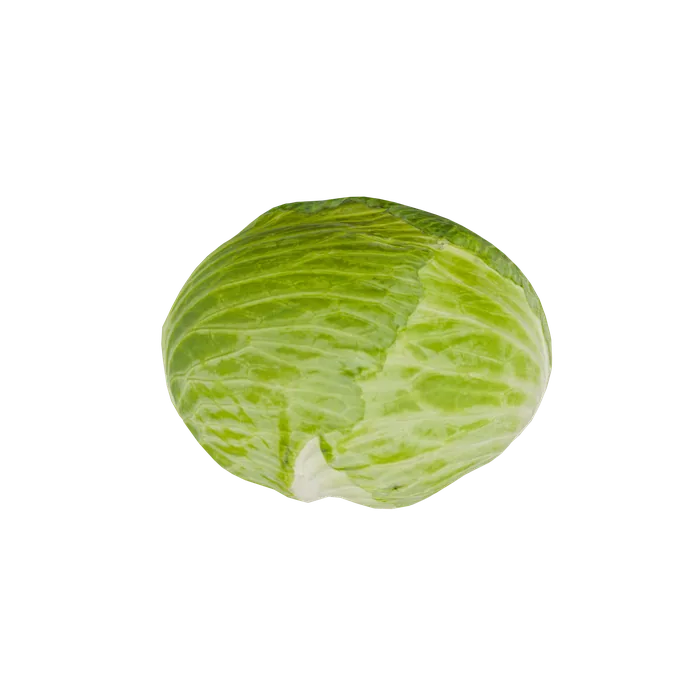
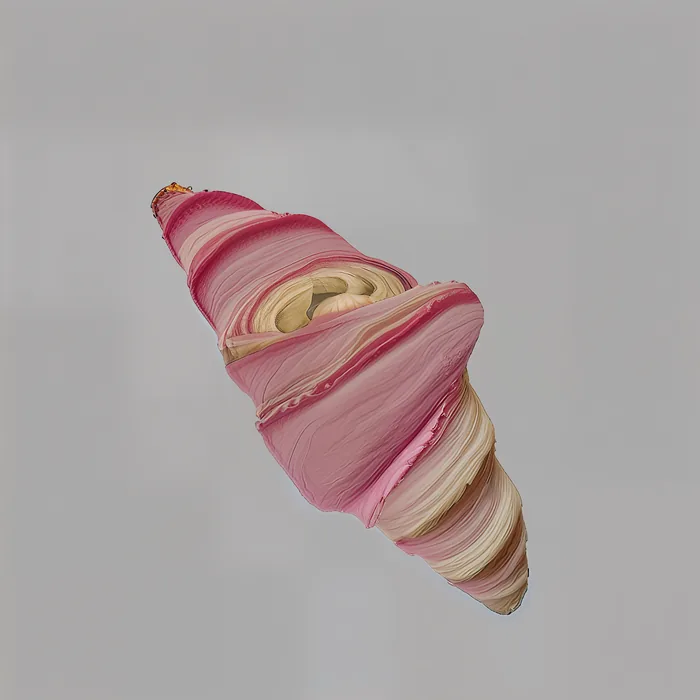
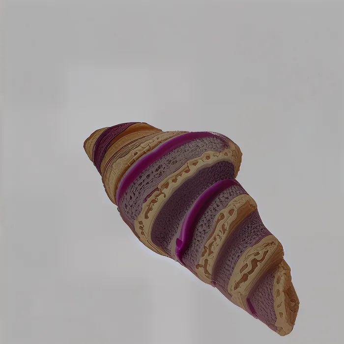
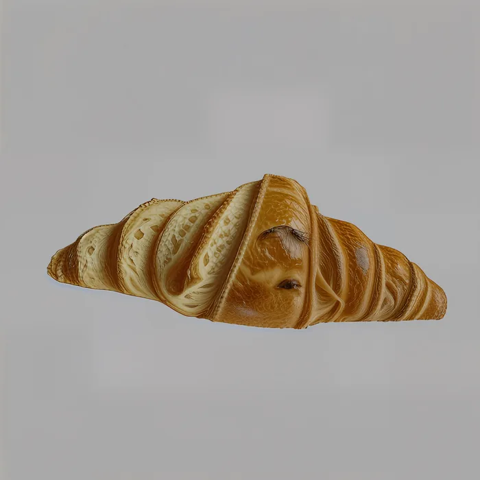
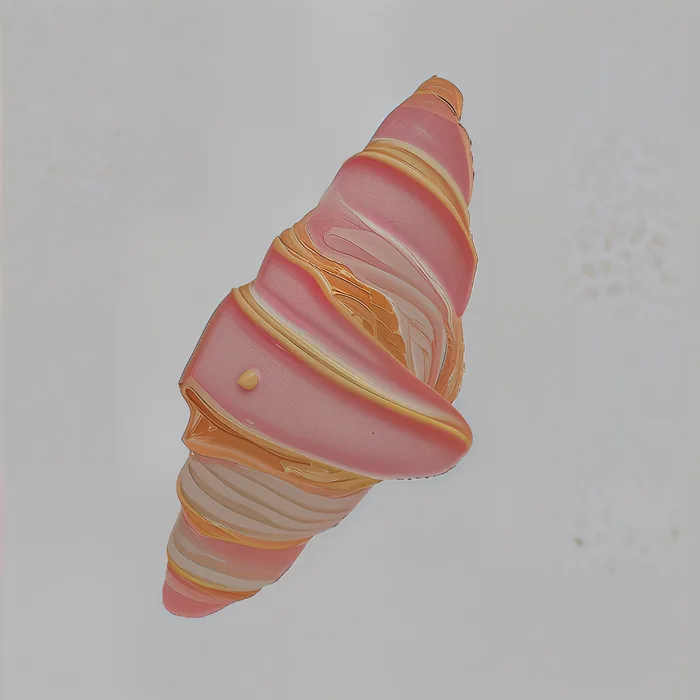
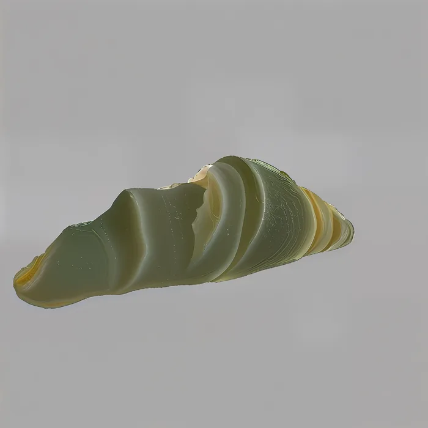
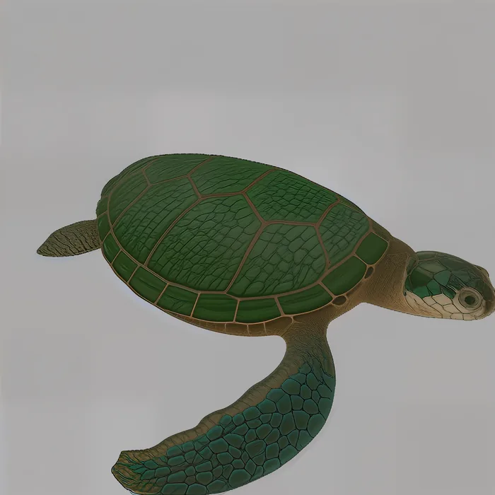
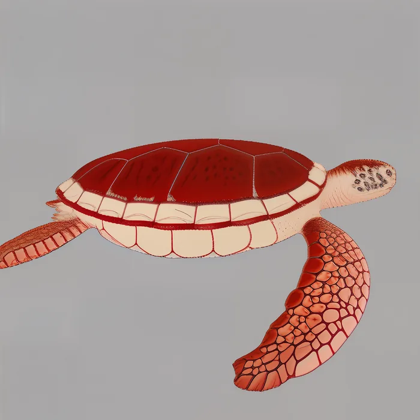

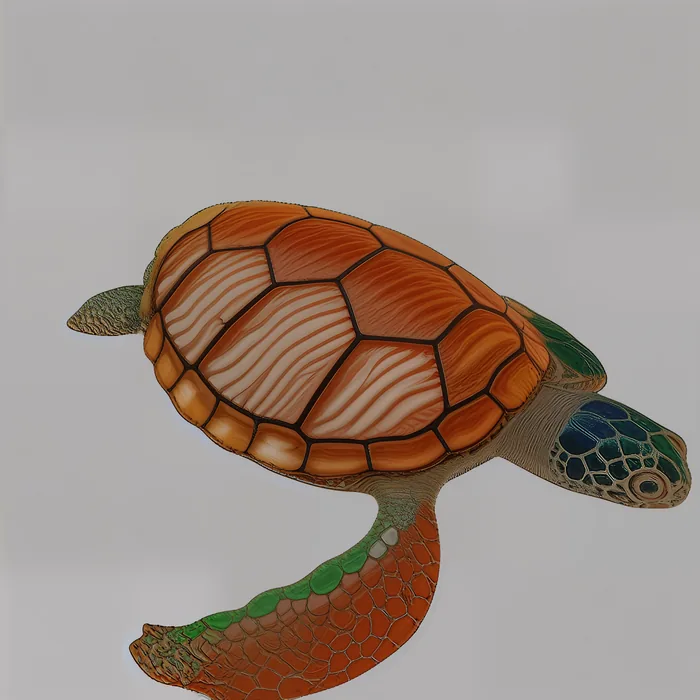
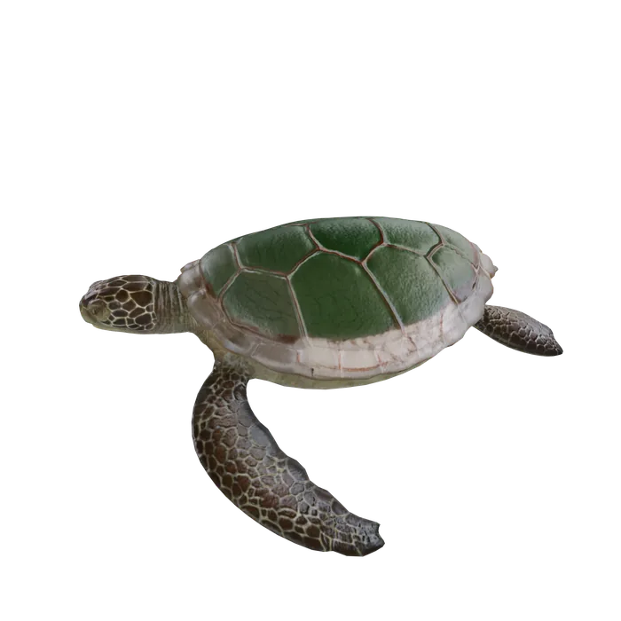
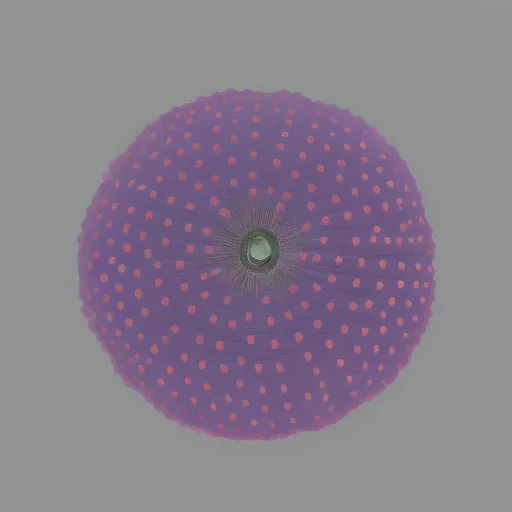
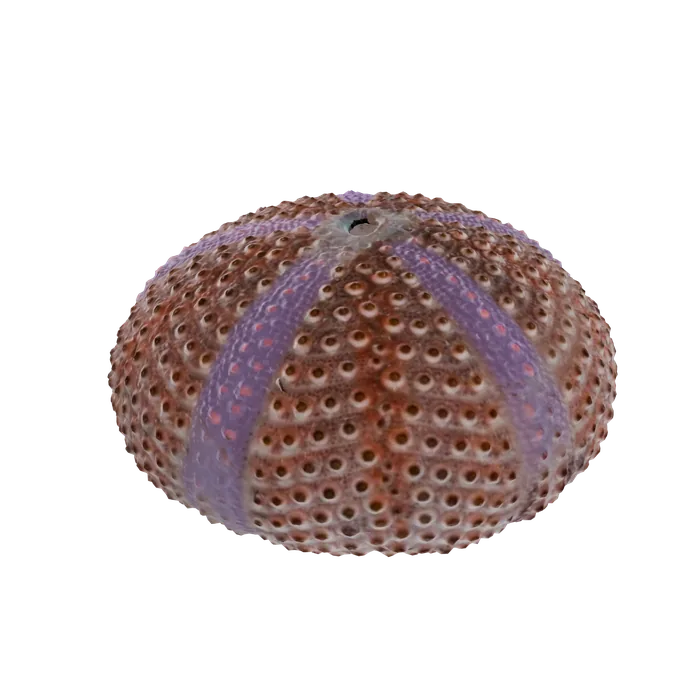
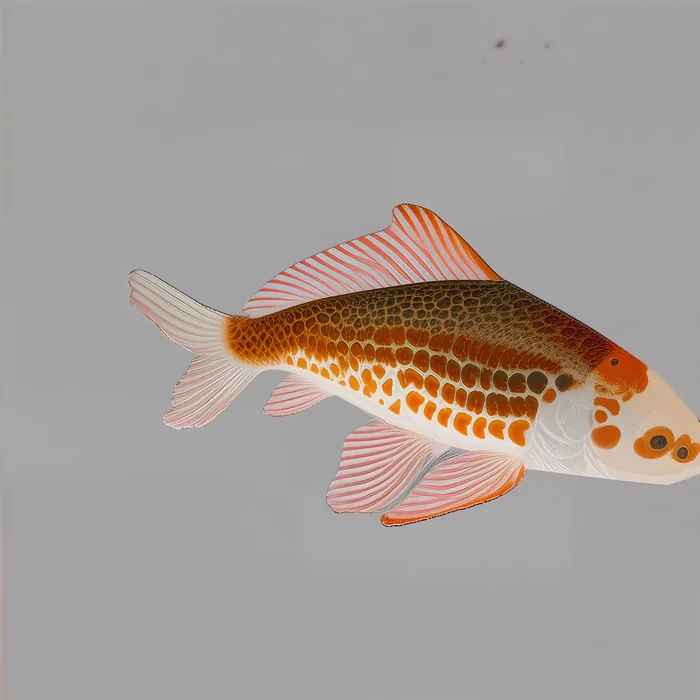
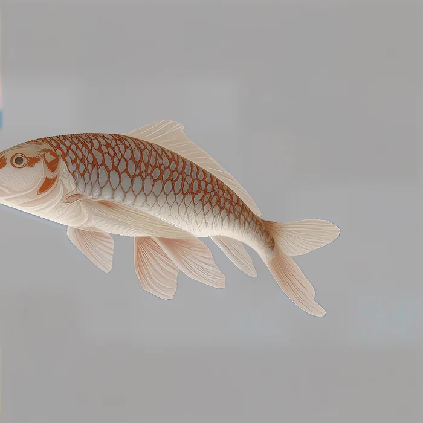
4.2 Zero-shot PBR
A model trained on texture can be used for PBR generation, padding the metallic and roughness channels with ones as pseudo RGB. The model retains the material–geometry correlation from the source.
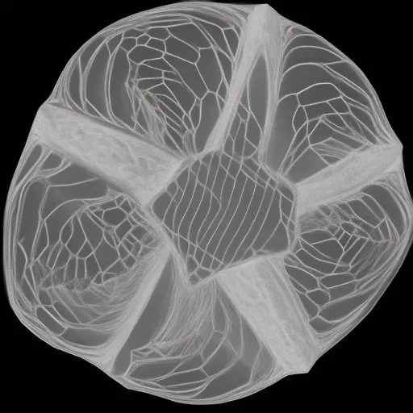
metallic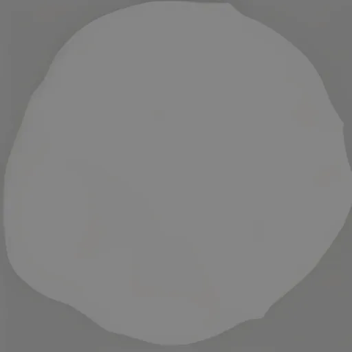
roughness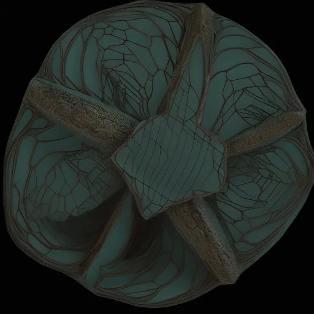
albedo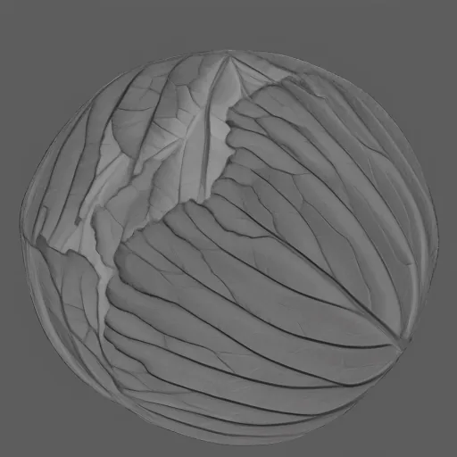
metallic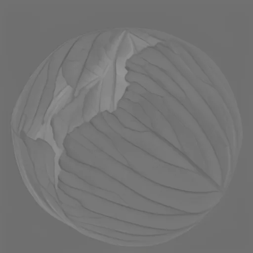
roughness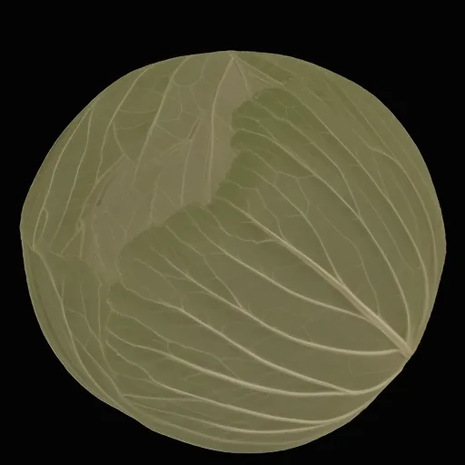
albedo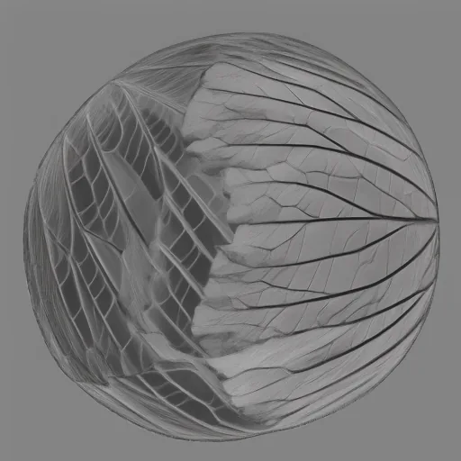
metallic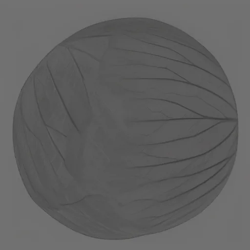
roughness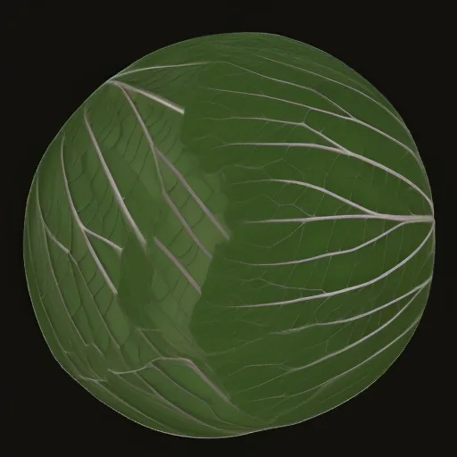
albedo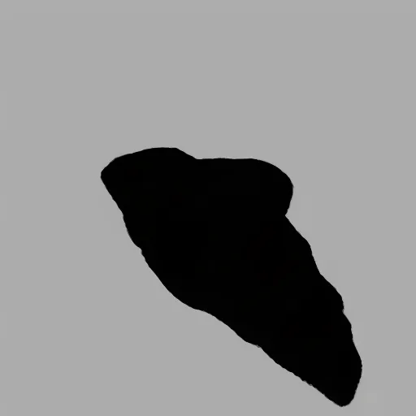
metallic roughness albedo4.3 Zero-shot transfer to unseen mesh
A model trained on a single shape transfers the learned geometry–texture correlation to unseen shapes.
4.4 Automatic texturing
References in, textured out via globally synced progressive inpainting
Comparison against baselines
All seven panels are one video, so every method shown is the same frame of the same turntable.
| Method | LPIPS ↓ | FID ↓ | DreamSim ↓ | CMMD ↓ |
|---|---|---|---|---|
| TexGen | — | 106.92 | 0.436 | 0.883 |
| MV-Adapter | 0.358 | 76.98 | 0.370 | 0.666 |
| Hunyuan 2.1 | 0.383 | 73.70 | 0.437 | 0.494 |
| TRELLIS 2 | 0.356 | 102.22 | 0.411 | 0.545 |
| GLOSS (ours) | 0.302 | 80.26 | 0.344 | 0.478 |
Per-mesh setting, averaged over 10 shapes. Best in orange.
Paint 3D appears in the turnarounds below but not in the table — it is shown for visual comparison only.